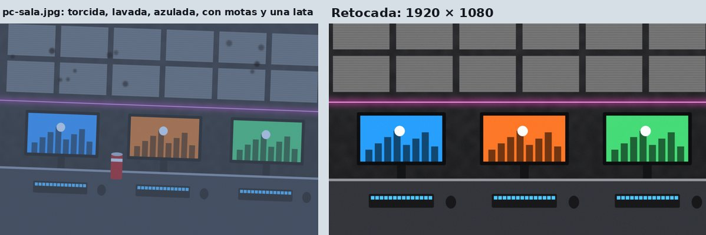
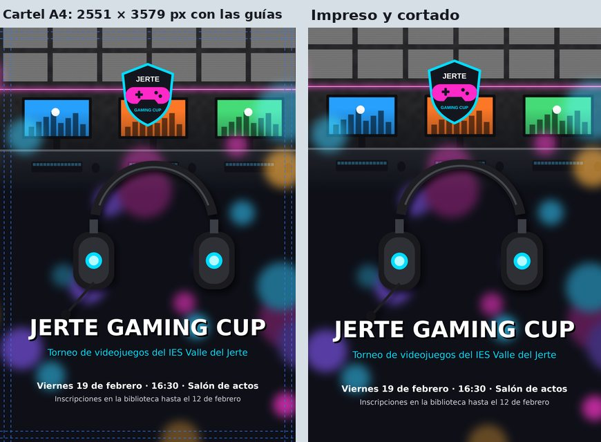
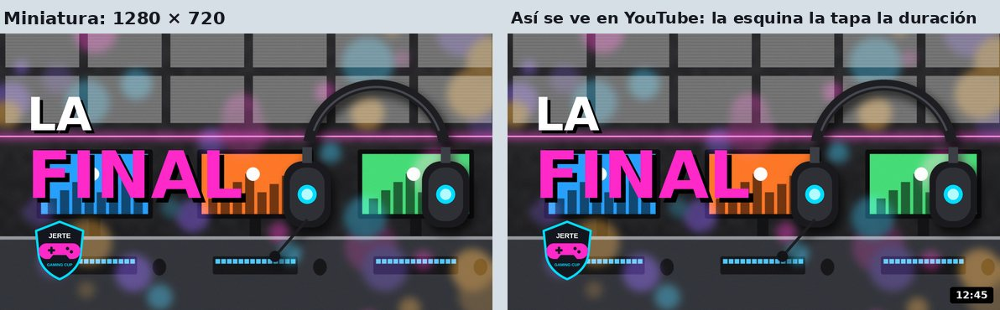
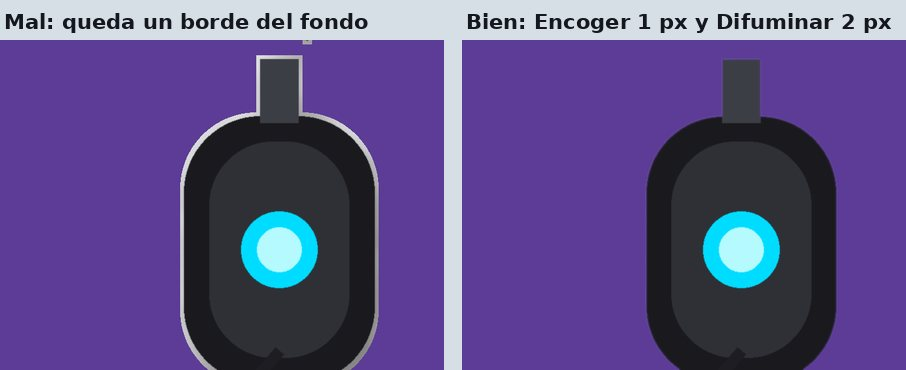
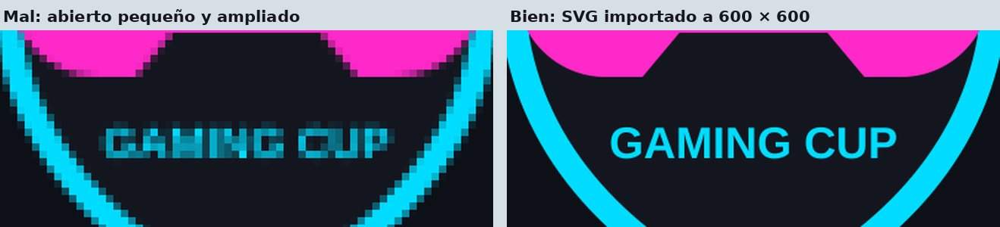
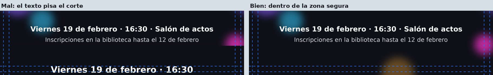

0223 · Aplicaciones ofimáticas · Tema 3 · Punto de control
Punto de control del Tema 3 — Jerte Gaming Cup
Qué se evalúa · RA y criterios
Resultado de aprendizaje
RA5. Manipula imágenes digitales analizando las posibilidades de distintos programas y aplicando técnicas de captura y edición básicas.
Criterios de evaluación que acredita:
- c) Se ha trabajado con imágenes a diferentes resoluciones, según su finalidad.
- d) Se han empleado herramientas para la edición de imagen digital.
- e) Se han importado y exportado imágenes en diversos formatos.
- f) Se ha publicado imágenes en diferentes medios.
El encargo
El instituto organiza la Jerte Gaming Cup, un torneo de videojuegos, y te encarga la imagen: una foto de la sala retocada, el cartel para la imprenta y la miniatura del vídeo de la final en YouTube.
- Material del punto de control
(ZIP, 0,6 MB):
pc-sala.jpg(la foto de la sala),pc-auriculares.jpg(para recortar),pc-luces.jpg(luces desenfocadas sobre negro) ypc-logo.svg(el logotipo, vectorial). Descomprímelo enTema3_Proyecto/control.
| Parte | Qué haces | Tiempo orientativo |
|---|---|---|
| A | Retocar la foto de la sala | 45 min |
| B | El cartel A4 para la imprenta | 1 h 30 min |
| C | La miniatura de YouTube | 30 min |
| — | Revisar con la lista y entregar | 15 min |
Parte A · La foto de la sala
La foto pc-sala.jpg está torcida, lavada (sin negros ni
blancos), azulada, con motas de polvo en los paneles de la pared y una lata
encima de la mesa.
- Archivo de trabajo
control-foto.xcf, con el original en una capa oculta debajo. - Recta: el borde de la mesa, horizontal.
- Recortada a 16:9, sin esquinas transparentes, y escalada a 1920 × 1080 px.
- Luz: el histograma va de un extremo a otro, sin quemar ni empastar.
- Color: sin dominante azul. Los paneles acústicos de la pared son grises.
- Limpia: sin la lata y sin ninguna mota, y sin manchas repetidas donde estaban.
- Enfocada un poco, después de escalar.
- Exportada como
control-foto.jpg, calidad 85, sin datos Exif.


Parte B · El cartel A4 para la imprenta
El archivo
control-cartel.xcf: A4 con 3 mm de sangrado a 300 ppp, es decir, 2551 × 3579 px (216 × 303 mm).- Guías de corte a 35 px de cada borde y de zona segura a 94 px. Tú calculas sus posiciones.
- El fondo llega hasta los cuatro bordes del archivo.
Las capas (como mínimo, todas con nombre)
- fondo: un color oscuro.
- foto: tu
control-foto.jpg, a todo el ancho, arriba, con máscara de capa en degradado para que se funda con el fondo. - luces:
pc-luces.jpgcubriendo el cartel, en modo Pantalla (el negro desaparece y quedan las luces). - auriculares: recortados de
pc-auriculares.jpg, sin ningún borde del fondo, de al menos 1200 px de ancho y con sombra arrojada. - logo: importado desde
pc-logo.svga 600 × 600 px (no lo abras pequeño y lo amplíes). - Cuatro capas de texto, con estas frases exactas y sin faltas:
- JERTE GAMING CUP (el título: al menos 150 px)
- Torneo de videojuegos del IES Valle del Jerte
- Viernes 19 de febrero · 16:30 · Salón de actos
- Inscripciones en la biblioteca hasta el 12 de febrero
Las salidas
- Metadatos: autor (tu nombre) y aviso de copyright.
control-cartel.pdf: una sola página de 216 × 303 mm.


Parte C · La miniatura de YouTube
control-miniatura.xcfde 1280 × 720 px, para el vídeo de la final.- Con la foto de la sala, los auriculares, el logotipo y el texto LA FINAL en grande, que se lea con la miniatura al tamaño del móvil.
- Nada importante en la esquina inferior derecha: ahí YouTube pone la duración del vídeo.
- Exportada como
control-miniatura.jpg, calidad 85, de menos de 2 MB.


Cómo se evalúa (rúbrica, 10 puntos)
Se comprueba sobre tus archivos: cada punto se aplica o no. Las puntuaciones se agrupan por criterio de evaluación.
| Qué se comprueba | Puntos |
|---|---|
| d) Se han empleado herramientas para la edición de imagen digital. | 5,0 |
| Foto recta y recortada a 16:9 sin esquinas transparentes | 0,5 |
| Luz corregida: histograma de extremo a extremo, sin quemar | 0,5 |
| Sin dominante: los paneles de la pared son grises | 0,5 |
| Sin lata ni motas, y sin manchas repetidas | 0,5 |
| Auriculares recortados sin borde del fondo, con sombra | 1,0 |
| Foto con máscara de capa en degradado | 0,5 |
| Luces en modo Pantalla | 0,5 |
| Los cuatro textos exactos, sin faltas, legibles y con dos tipografías como mucho | 0,5 |
| XCF con todas las capas con nombre y los textos editables | 0,5 |
| c) Se ha trabajado con imágenes a diferentes resoluciones, según su finalidad. | 1,5 |
| Cartel de 2551 × 3579 px a 300 ppp | 0,5 |
| Foto de 1920 × 1080 px | 0,5 |
| Miniatura de 1280 × 720 px | 0,5 |
| e) Se han importado y exportado imágenes en diversos formatos. | 1,5 |
| Logotipo importado desde el SVG a 600 × 600, nítido | 0,5 |
| PDF de una página y JPG de calidad 85 sin datos Exif | 0,5 |
| Entrega completa con los nombres correctos | 0,5 |
| f) Se ha publicado imágenes en diferentes medios. | 2,0 |
| Cartel con guías: fondo hasta el borde y todos los textos y el logotipo dentro de la zona segura | 1,0 |
| Miniatura legible en pequeño y sin nada en la esquina inferior derecha | 0,5 |
| Metadatos de autor y copyright en el cartel | 0,5 |
Consejo de método. Hazlo en el orden de la práctica guiada: primero la foto entera (sin ella no puedes montar nada), después el lienzo y las guías, luego las capas de abajo arriba y los textos al final. Guarda el XCF cada pocos pasos. Si te atascas en un recorte, sigue con lo demás y vuelve después: no te quedes media hora en un solo punto.
Entrega
Qué entregas del punto de control
Los tres archivos de trabajo y sus salidas. No lleva memoria: los XCF son la prueba de cómo lo has hecho.
Sube a Moodle <usuario>_p38.zip. En su raíz:
| En tu carpeta | Nombre dentro del ZIP | Parte |
|---|---|---|
control-foto.xcf | <usuario>_a01.xcf | A |
control-foto.jpg | <usuario>_a01.jpg | A |
control-cartel.xcf | <usuario>_a02.xcf | B |
control-cartel.pdf | <usuario>_a02.pdf | B |
control-miniatura.xcf | <usuario>_a03.xcf | C |
control-miniatura.jpg | <usuario>_a03.jpg | C |
Cambia el nombre solo a las copias que metes en el ZIP. Si un XCF pesa mucho, comprueba que no has dejado capas de prueba duplicadas.
Comprueba antes de entregar
- La foto mide 1920 × 1080, está recta, sin la lata ni motas, y los paneles de la pared son grises.
- El cartel mide 2551 × 3579 px a 300 ppp, tiene las ocho guías y ningún texto ni el logotipo pasan las de 94 px.
- En el diálogo Capas del cartel están fondo, foto (con máscara), luces (Pantalla), auriculares, logo y los cuatro textos.
- Al 100 %, alrededor de los auriculares no hay ningún filo claro.
- El logotipo se ve nítido al 100 % (lo importaste a 600 px).
- El PDF tiene una página de 216 × 303 mm; la miniatura mide 1280 × 720 y no tiene nada en la esquina de abajo a la derecha.
- Los seis archivos están en la raíz del ZIP con su nombre.
Cómo debe quedar (y cómo no)






Fallo más común: poner las luces en modo Normal y bajarles la opacidad. Se ve un velo negro encima de todo; en Pantalla, el negro desaparece.